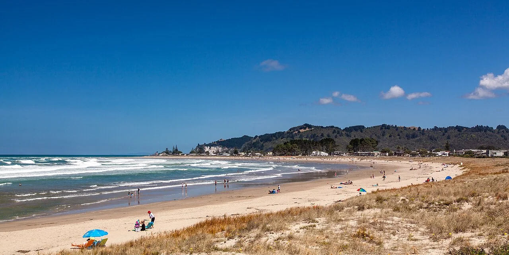

Whangamatā
Coromandel, Nouvelle-Zélande · surf

Une ville de surf de la péninsule de Coromandel. Une escale balnéaire sur un itinéraire de la côte est.
- Lieu
- Coromandel, Nouvelle-Zélande
- Niveau
- Variable selon les conditions
- Activités
- surf
- Type d'eau
- Mer / océan
- Coordonnées
- -37.21, 175.88 (position approximative du secteur)
Ouvrir dans Ocean Buddy Télécharger sur l'App Store
Source : Tourism New Zealand.